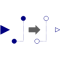

ShiftSampleShift the clocked Real input signal by a fraction of the last interval and and provide it as clocked output signal |

|
Information
This information is part of the Modelica Standard Library maintained by the Modelica Association.
This block shifts the first activation of the clock of the output y by fraction shiftCounter/resolution of the period (or for a non-periodic signal by a fraction of the last interval) and the output y is set to the last available value of the input u. Here, shiftCounter and resolution are positive Integer parameters.
To be more precise: The block constructs (conceptually) a clock “cBase”
Clock cBase = subSample(superSample(u, resolution), shiftCounter)
and the clock of y starts at the second clock tick of cBase. At every tick of the clock of y, the operator returns the value of u from the last tick of the clock of u.
Note, for EventClocks there is the restriction that block ShiftSample can only shift the number of ticks of the EventClock clock, but cannot introduce new ticks, due to the restriction of operator superSample on EventClocks.
Also note, that this block does not simply shift the signal in time, since only the value of u from the last tick of the clock of u is used for the output. If a time-delayed clock is desired, use instead block NonPeriodic.FractionalDelay where the input signal is delayed by a time period and old values of u are stored in a buffer. If the time delay is less than one period, the two blocks, ShiftSample and FractionalDelay, give the same result.
Example
The following
example
samples a sine signal with a periodic clock of 20 ms period, and
then shifts it with shiftCounter = 4 and resolution = 3:
 |
 |
|
| model | simulation result |
The first activation of output y of block shiftSample1 is shifted in time (4/3*20ms). The parameter values shiftCounter = 4 and resolution = 3 are visible at the bottom of the icon. Also note, that the signal is not simply a shift in time. The output of a ShiftSample block will always be the value from the last tick of the clock of its inputs.
Parameters (2)
| shiftCounter |
Value: 0 Type: Integer Description: Numerator of shifting formula |
|---|---|
| resolution |
Value: 1 Type: Integer Description: Denominator of shifting formula |
Connectors (2)
| u |
Type: RealInput Description: Connector of clocked, Real input signal |
|
|---|---|---|
| y |
Type: RealOutput Description: Connector of clocked, Real output signal |
Used in Examples (5)
|
Modelica.Clocked.Examples.Elementary.RealSignals Example of a Hold block for Real signals |
|
|
Modelica.Clocked.Examples.Elementary.RealSignals Example of a HoldWithDAeffects block for Real signals |
|
|
Modelica.Clocked.Examples.Elementary.RealSignals Example of a HoldWithDAeffects block for Real signals (with a computational delay of one sample period) |
|
|
Modelica.Clocked.Examples.Elementary.RealSignals Example of a ShiftSample block for Real signals |
|
|
Modelica.Clocked.Examples.Elementary.RealSignals Example of a BackSample block for Real signals |